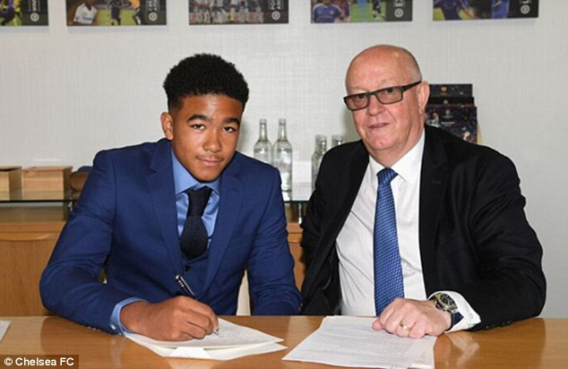
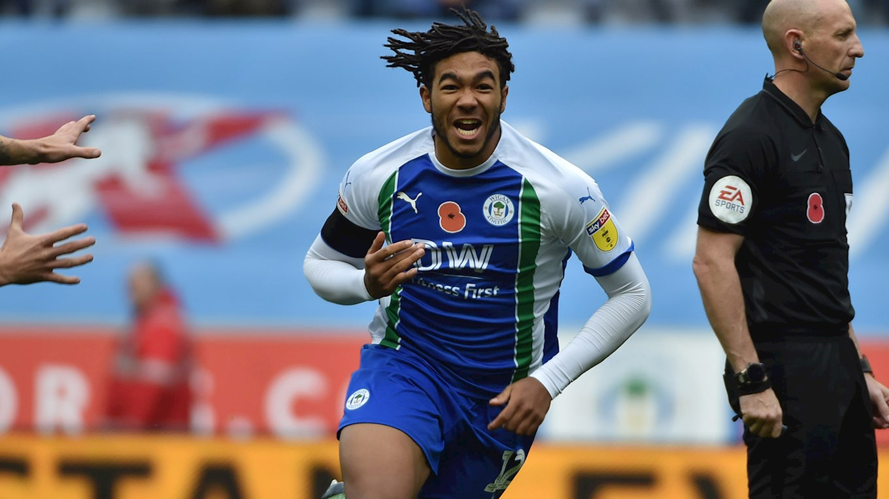

REECE JAMES
REECE JAMESดาวเตะรายนี้ถนัดเท้าขวา มีความคล่องแคล่ว ครอสบอลได้ยอดเยี่ยมซึ่งช่วยด้านการเล่นในตำแหน่งฟูลแบ็คและวิงแบ็ค ไล่มาทุกระดับชั้นจนตอนนี้ขึ้นมาอยู่กับทีมชุดใหญ่
เจมส์เริ่มต้นจากการเล่นกองหน้า ก่อนจะขยับลงไปเล่นมิดฟิลด์และกองหลัง เขาลงเดบิวต์ให้กับทีมเยาวชนขณะที่ยังเป็นนักเรียนในฤดูกาล 2015/16 ก่อนจะก้าวขึ้นมาเป็นกำลังสำคัญในทีมชุดที่คว้า 3 แชมป์ให้กับรุ่นอายุไม่เกิน 18 ปีในปีถัดมา
เดือนมีนาคม ปี 2017 เจมส์เซ็นสัญญาอาชีพฉบับแรกกับสโมสร ซึ่งมีระยะเวลายาวไปจนจบฤดูกาล 2018/19 เขาสานต่อฟอร์มอันยอดเยี่ยมในฤดูกาล 2017/18 โดยสวมปลอกแขนกัปตันทีม U-18 พาต้นสังกัดคว้าแชมป์เอฟเอ ยูธ คัพได้อีกหนึ่งสมัย และได้รับรางวัลผู้เล่นยอดเยี่ยมประจำซีซั่นของทีมอคาเดมี่
เดือนมิถุนายน ปี 2018 เขาเซ็นสัญญาใหม่กับเชลซีเป็นระยะเวลา 4 ปี และถูกปล่อยยืมไปเล่นให้วีแกน แอธเลติก
เขาประสบความสำเร็จเป็นอย่างมาก โดยช่วยให้วีแกน แอธเลติกยังคงอยู่ในแชมเปี้ยนชิพ และได้รับการโหวตจากแฟนบอลถึง 96% ให้เป็นนักเตะยอดเยี่ยมแห่งปีของสโมสร
เขาประจำการในตำแหน่งแบ็คขวากับมิดฟิลด์ตัวกลาง และยังได้รับการโหวตจากเพื่อนร่วมสังกัดให้เป็นนักเตะยอดเยี่ยมแห่งปีอีกด้วย ที่ยอดเยี่ยมเข้าไปใหญ่คือลูกยิงของเจมส์ในเกมบุกเยือนบริสตอล ซิตี้ ได้คว้ารางวัลประตูยอดเยี่ยมประจำฤดูกาลของสโมสร
เขาเป็นกำลังสำคัญของทีมชาติอังกฤษ U-17 ที่คว้าแชมป์ตูลอน ทัวร์นาเม้นต์ในช่วงซัมเมอร์ของปี 2017 โดยโชว์ฟอร์มยอดเยี่ยมจนมีชื่อติดทีมยอดเยี่ยมของรายการ เจมส์ร่วมเดินทางไปแข่งขันฟุตบอลชิงแชมป์แห่งชาติยุโรป รุ่น U-19 ในปีเดียวกันนั้น ก่อนก้าวชั้นขึ้นสู่ทีม U-21 ในเดือนตุลาคม ปี 2019
อีกประมาณหนึ่งปีหลังจากนั้น เขาถูกเรียกติดทีมชาติอังกฤษชุดใหญ่เป็นครั้งแรก การประเดิมสนามให้ทัพสิงโตคำรามเกิดขึ้นในวันที่ 8 ตุลาคม ปี 2020 โดยลงเป็นตัวสำรองช่วงครึ่งหลังช่วยชาติเอาชนะเวลส์ 3-0 ที่สนามเวมบลีย์ ต่อมาเขาได้ลงตัวจริงจากตำแหน่งวิงแบ็คในการแข่งขันเนชั่นส์ ลีก พบ เดนมาร์ก แต่โดนใบแดงหลังสิ้นเสียงนกหวีดหมดเวลาในเกมที่อังกฤษพ่ายไป 1-0
เจมส์ มีชื่อเป็นส่วนหนึ่งในทีมชาติอังกฤษของ แกเร็ธ เซาท์เกต ชุดสู้ศึกยูโร 2020 และได้ลงสนามหนึ่งนัดให้กับทรี ไลอ้อนส์ เกมที่เสมอกับสก็อตแลนด์ 0-0 ในรอบแบ่งกลุ่มแบบเต็มเวลา เขามีชื่อเป็นตัวสำรองที่ไม่ได้ลงสนามใน 4 จาก 5 นัดหลังจากนั้น รวมถึงรอบรองชนะเลิศ และรอบชิงชนะเลิศที่อังกฤษ ปราชัยให้กับอิตาลีด้วยการดวลจุดโทษในสนามเวมบลีย์
SOCIAL MEDIA
 |
|